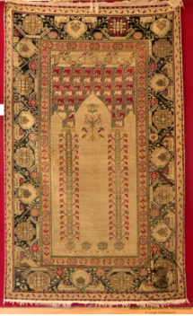

7. भारतीय कालीन

अभिलेख संख्या: XXXIX-23
मुसल्ला भारतीय कालीन में नुकीले मेहराब (कसप आर्च) की आकृति है, जिसमें फूलों वाले पौधों को स्तंभों के रूप में दर्शाया गया है और तीन पुष्प-लताओं की सीमाएँ (बॉर्डर) हैं। भारत में कालीन बुनाई की कला, विशेष रूप से मुगल कालीन के रूप में प्रसिद्ध, 16वीं शताब्दी में मुगल सम्राट अकबर द्वारा शुरू की गई थी, जिन्होंने फ़ारसी बुनकरों को भारत लाया था। आज कालीन उद्योग कश्मीर, जयपुर और आगरा में फल-फूल रहा है। ये कालीन अपने जटिल डिज़ाइनों, गहरे रंगों और उन आकृतियों के लिए प्रसिद्ध हैं जो पूरे कालीन की सतह को ढक लेती हैं। भारतीय कालीनों की एक विशेषता यह है कि इनके गांठें (knots) बहुत बारीकी से बुनी जाती हैं। अन्य प्रकार के कालीनों की तुलना में इनकी गांठों की घनत्व अधिक होती है। प्रति वर्ग इंच गांठों की संख्या भारतीय कालीनों की सबसे आकर्षक विशेषता है। यह कालीन भारत का है और 19वीं शताब्दी का है।
7. Indian Carpet
Acc No: XXXIX-23
The musalla Indian carpet has a cusped arch form, with flowering plants rendered as columns and three floral-vine borders. The art of carpet weaving in India, famous especially as the Mughal carpet, was begun in the 16th century by the Mughal emperor Akbar, who brought Persian weavers to India. Today the carpet industry flourishes in Kashmir, Jaipur and Agra. These carpets are renowned for their intricate designs, deep colours and the motifs that cover the entire surface of the carpet. One characteristic of Indian carpets is that their knots are woven very finely. Their knot density is higher than that of other kinds of carpet. The number of knots per square inch is the most striking feature of Indian carpets. This carpet is from India and dates from the 19th century AD.
7. భారతీయ కార్పెట్
Acc No: XXXIX-23
ముసల్లా భారతీయ తివాచీలో కోణాకార వంపు (కస్ప్ ఆర్చ్) ఆకృతి ఉంది, ఇందులో పూల మొక్కలను స్తంభాల రూపంలో చూపించారు మరియు మూడు పూల-తీగల అంచులు (బార్డర్లు) ఉన్నాయి. భారతదేశంలో తివాచీ నేత కళను, ప్రత్యేకంగా మొఘల్ తివాచీగా ప్రసిద్ధి చెందినదానిని, 16వ శతాబ్దంలో మొఘల్ చక్రవర్తి అక్బర్ ప్రారంభించాడు, ఆయన పర్షియన్ నేతకారులను భారతదేశానికి తీసుకువచ్చాడు. నేడు తివాచీ పరిశ్రమ కాశ్మీర్, జైపూర్ మరియు ఆగ్రాలో వర్ధిల్లుతోంది. ఈ తివాచీలు వాటి సంక్లిష్టమైన డిజైన్లు, ముదురు రంగులు మరియు తివాచీ మొత్తం ఉపరితలాన్ని కప్పే ఆకృతుల కారణంగా ప్రసిద్ధి చెందాయి. భారతీయ తివాచీల ఒక ప్రత్యేకత ఏమిటంటే వాటి ముడులు చాలా సూక్ష్మంగా నేయబడతాయి. ఇతర రకాల తివాచీలతో పోలిస్తే వాటి ముడుల సాంద్రత ఎక్కువగా ఉంటుంది. చదరపు అంగుళానికి ఉండే ముడుల సంఖ్య భారతీయ తివాచీల అత్యంత ఆకర్షణీయమైన లక్షణం. ఈ తివాచీ భారతదేశానికి చెందినది మరియు క్రీ.శ. 19వ శతాబ్దానికి చెందినది.
۷. ہندوستانی قالین
Acc No: XXXIX-23
یہ نماز پڑھی جانے والی مخصوص ہندوستانی قالین ہے، جس میں نوک دار محراب ڈیزائن کیا گیا ہے، ستونوں کی صورت میں پھولوں کے پودے دکھائے گئے ہیں اور تین پھولوں کی بیل والے بارڈر بھی موجود ہیں۔ ہندوستان میں قالین کی صنعت خاص طور پر مغلیہ قالین کی روایت سولہویں صدی میں بادشاہ اکبر کے عہد میں آئی، جنہوں نے فارسی کاریگر ہندوستان لائے۔ یہ قالین اپنے پیچیدہ نقوش، گہرے اور شوخ رنگوں اور ڈیزائنوں کے لیے مشہور ہیں۔ یہ قالین ہندوستان کا ہے اور انیسویں صدی سے تعلق رکھتا ہے۔
৭. ভারতীয় কার্পেট
Acc No: XXXIX-23
ভারতীয় এই মুসল্লা কার্পেটটিতে খিলানযুক্ত নকશા রয়েছে, যেখানে স্তম্ভ হিসেবে ফুটিয়ে তোলা হয়েছে নানা ধরনের ফুলগাছ। এর চারপাশ জুড়ে রয়েছে তিনটি লতানো ফুলের বর্ডার বা সীমানা। ভারতীয় কার্পেট বুননের এই শিল্প, যা মূলত 'মোগল কার্পেট' নামে পরিচিত, যা ষোড়শ শতাব্দীতে মোগল সম্রাট আকবরের সময়ে প্রবর্তিত হয়। তিনি পারস্যের দক্ষ কারિগরদের ভারতে নিয়ে আসেন, যার ফলে ভারতে কার্পেট বুননের এই সমৃদ্ধ শিল্পের বিকাশ ঘটে। বর্তমানে কাশ্মীর, জয়পুর এবং আগ্রায় কার্পટ বুনন শিল্প অত্যন্ত সমৃদ্ধি লাভ করেছে। এই অঞ্চলের কার্পেটগুলি তাদের সূক্ষ্ম নকশা, উজ্জ্বল রঙ এবং পুরো জমিন জুড়ে বিস্তৃত মোটিফ বা কারুকাজের জন্য বিশেষভাবে পরিচিত। ভারতীয় কার্পেটটির একটি উল্লেখযোগ্য বৈশিষ্ট্য হলো এর বুনন বা গিঁট পাকানোর বিশেষ পদ্ধতি। এমনকি અન્ય દેશોના কার্পেটের তুলনায় এগুলোর বুননের ঘনত্ব অনেক বেশি। প্রতি বর্গ ইঞ্চিতে গিঁটের সংখ্যা বা ঘনত্ব যে কাউকে মুগ্ধ করবে। এই বিশেষ ভারতীয় কার্পেটটি উনবিংশ শতাব্দী એક અનન્ય નિદર્શન।
૭. ભારતીય જાજમ
Acc No: XXXIX-23
મુસલ્લા માટેનું ભારતીય કાર્પેટ, જેમાં કસપ આર્ક ડિઝાઇન છે, ફૂલવાળા છોડને સ્તંભના રૂપમાં દર્શાવાયું છે અને આસપાસ ત્રણ ફૂલ-લતાવાળી બોર્ડર છે. ભારતમાં કાર્પેટ વણવાની કલા, ખાસ કરીને મુગલ કાર્પેટ તરીકે જાણીતી, 16મી સદીમાં મુગલ શાહ જહાંગીર અથવા અકબરે પર્શિયન કારીગરોને ભારત લાવીને રજૂ કરવી શરૂ કરી. આજે કાર્પેટ ઉદ્યોગ કાશ્મીર, જયપુર અને આગ્રામાં ફૂલે છે. આ કાર્પેટો તેમની સુક્ષ્મ નકશીઓ, સમૃદ્ધ રંગો અને રગની સપાટી પર આવરી લેતા મૂલ્યો માટે જાણીતા છે. ભારતીય કાર્પેટોના એક મહત્વપૂર્ણ લક્ષણ એ છે કે તેમની નોટ્સ કેવી રીતે વણાયેલ છે. અન્ય પ્રકારના કાર્પેટોની તુલનામાં નોટ્સની ઘનતા થોડી વધારે હોય છે. ચોરસ ઈંચમાં નોટ્સની સંખ્યા ભારતીય કાર્પેટમાં ખાસ ધ્યાન ખેંચે છે. આ કાર્પેટ ભારતનું છે અને તેનો સમય 19મી સદીનો માનવામાં આવે છે.
7. ಇಂಡಿಯನ್ ಕಾರ್ಪೆಟ್
Acc No: XXXIX-23
ಹೂವಿನ ಗಿಡಗಳನ್ನೇ ಕಂಬಗಳಂತೆ ವಿನ್ಯಾಸಗೊಳಿಸಿರುವ ಮೊನಚಾದ ಕಮಾನಿನ ವಿನ್ಯಾಸ ಮತ್ತು ಮೂರು ಹೂವಿನ ಬಳ್ಳಿಯ ಅಂಚುಗಳನ್ನು ಹೊಂದಿರುವ, ಭಾರತೀಯ 'ಮುಸಲ್ಲಾ' ರತ್ನಗಂಬಳಿ ಇದಾಗಿದೆ. ಭಾರತದಲ್ಲಿ ರತ್ನಗಂಬಳಿ ನೇಯುವ ಕಲೆ, ವಿಶೇಷವಾಗಿ 'ಮೊಘಲ್ ರತ್ನಗಂಬಳಿಗಳು' ಎಂದು ಕರೆಯಲ್ಪಡುವ ಈ ಕಲೆಯು, 16ನೇ ಶತಮಾನದಲ್ಲಿ ಮೊಘಲ್ ಚಕ್ರವರ್ತಿ ಅಕ್ಬರ್ನಿಂದ ಪರಿಚಯಿಸಲ್ಪಟ್ಟಿತು. ಅವರು ಪರ್ಷಿಯನ್ ನೇಕಾರರನ್ನು ಭಾರತಕ್ಕೆ ಕರೆತಂದರು. ಇಂದು, ಕಾಶ್ಮೀರ, ಜೈಪುರ ಮತ್ತು ಆಗ್ರಾಗಳಲ್ಲಿ ರತ್ನಗಂಬಳಿ ನೇಯ್ಗೆಯ ಉದ್ಯಮವು ಅತ್ಯಂತ ಪ್ರವರ್ಧಮಾನಕ್ಕೆ ಬರುತ್ತಿದೆ. ಈ ರತ್ನಗಂಬಳಿಗಳು ತಮ್ಮ ಸಂಕೀರ್ಣವಾದ ವಿನ್ಯಾಸಗಳು, ಶ್ರೀಮಂತ ಬಣ್ಣಗಳು ಮತ್ತು ಮೇಲ್ಮೈಯನ್ನು ಸಂಪೂರ್ಣವಾಗಿ ಆವರಿಸುವ ಸುಂದರವಾದ ಲಕ್ಷಣಗಳಿಗೆ ಹೆಸರುವಾಸಿಯಾಗಿವೆ. ಭಾರತೀಯ ರತ್ನಗಂಬಳಿಗಳ ಒಂದು ಪ್ರಮುಖ ಲಕ್ಷಣವೆಂದರೆ, ಅವುಗಳ ಗಂಟುಗಳನ್ನು ಹೆಣೆಯುವ ವಿಶಿಷ್ಟ ಶೈಲಿಯಾಗಿದೆ. ಇತರ ರೀತಿಯ ರತ್ನಗಂಬಳಿಗಳಿಗೆ ಹೋಲಿಸಿದರೆ ಇದರಲ್ಲಿನ ಗಂಟುಗಳ ಸಾಂದ್ರತೆಯು ಸ್ವಲ್ಪ ಹೆಚ್ಚಾಗಿಯೇ ಇರುತ್ತದೆ. ಭಾರತೀಯ ರತ್ನಗಂಬಳಿಗಳಲ್ಲಿ ಪ್ರತಿ ಚದರ ಅಂಗುಲಕ್ಕೆ ಇರುವ ಗಂಟುಗಳ ಪ್ರಮಾಣವು ಖಂಡಿತವಾಗಿಯೂ ನಿಮ್ಮ ಗಮನ ಸೆಳೆಯುತ್ತದೆ. ಭಾರತದಲ್ಲಿಯೇ ರೂಪುಗೊಂಡಿರುವ ಈ ಸುಂದರವಾದ ಹಾಗೂ ಐತಿಹಾಸಿಕ ರತ್ನಗಂಬಳಿಯು 19ನೇ ಶತಮಾನದಷ್ಟು ಹಳೆಯದಾಗಿದೆ.
୭. ଭାରତୀୟ ଗାଲିଚା
Acc No: XXXIX-23
ମୁସଲ୍ଲା ଭାରତୀୟ ଗାଲିଚାରେ ଫୁଲ ଗଛ ଆକୃତିର ସ୍ତମ୍ଭ ସହ ତୋରଣାକାର ଡିଜାଇନ୍ ଅଛି ଏବଂ ଏହାରେ ତିନୋଟି ଫୁଲ ଲତା ଆକୃତିର ସୀମା (ବର୍ଡର୍) ରହିଛି। ଭାରତରେ ଗାଲିଚା ବୁନାର କଳା, ବିଶେଷକରି ମୁଘଲ୍ ଗାଲିଚା ଭାବେ ପରିଚିତ, ୧୬ଶତାବ୍ଦୀରେ ମୁଘଲ ସମ୍ରାଟ୍ ଅକବରଙ୍କ ଦ୍ୱାରା ପରିଚାଲିତ ହୋଇଥିଲା, ଯିଏ ଫାରସୀ ବୁନକାରମାନଙ୍କୁ ଭାରତକୁ ଆଣିଥିଲେ। ଆଜି ଗାଲିଚା ବୁନା ଶିଳ୍ପ କାଶ୍ମୀର, ଜୟପୁର ଏବଂ ଆଗ୍ରାରେ ଫଳିଫୁଲି ଚାଲିଛି। ଏହି ଗାଲିଚାଗୁଡ଼ିକ ତାଙ୍କର ସୂକ୍ଷ୍ମ ଆକୃତି, ସମୃଦ୍ଧ ରଙ୍ଗ ଏବଂ ସମଗ୍ର ପୃଷ୍ଠଭୂମିକୁ ଆଚ୍ଛାଦିତ କରୁଥିବା ମୋଟିଫ୍ମାନଙ୍କ ପାଇଁ ପ୍ରସିଦ୍ଧ। ଭାରତୀୟ ଗାଲିଚାର ଏକ ବିଶେଷ ବିଶିଷ୍ଟତା ହେଉଛି ତାହାର ଗାଠି ବାନ୍ଧିବା ପ୍ରକ୍ରିୟା। ଅନ୍ୟ ଗାଲିଚାଠାରୁ ଏହାର ଗାଠିର ଘନତା ମଧ୍ୟ ଅଧିକ ଅଟେ। ପ୍ରତି ବର୍ଗ ଇଞ୍ଚରେ ଥିବା ଗାଠିର ସଂଖ୍ୟା ଭାରତୀୟ ଗାଲିଚାରେ ଅତ୍ୟନ୍ତ ଆକର୍ଷଣୀୟ ଅଟେ। ଏହି ଗାଲିଚା ହେଉଛି ଭାରତର ଏବଂ ଏହା ୧୯ଶତାବ୍ଦୀର।
7. भारतीय गालिचा
Acc No: XXXIX-23
मुसल्ला भारतीय गालिच्यात टोकदार कमानीची (कस्प आर्च) आकृती आहे, ज्यात फुलझाडे स्तंभांच्या रूपात दाखवली आहेत आणि फुलांच्या वेलींच्या तीन किनारी (बॉर्डर) आहेत. भारतात गालिचा विणकामाची कला, विशेषतः मुघल गालिचा म्हणून प्रसिद्ध, १६व्या शतकात मुघल सम्राट अकबराने सुरू केली, ज्याने पर्शियन विणकरांना भारतात आणले. आज गालिचा उद्योग काश्मीर, जयपूर आणि आग्रा येथे भरभराटीला आला आहे. हे गालिचे त्यांच्या गुंतागुंतीच्या नक्षींसाठी, गडद रंगांसाठी आणि संपूर्ण गालिच्याचा पृष्ठभाग व्यापणाऱ्या आकृत्यांसाठी प्रसिद्ध आहेत. भारतीय गालिच्यांचे एक वैशिष्ट्य असे की त्यांच्या गाठी अतिशय बारकाईने विणल्या जातात. इतर प्रकारच्या गालिच्यांच्या तुलनेत त्यांच्या गाठींची घनता अधिक असते. प्रति चौरस इंच गाठींची संख्या हे भारतीय गालिच्यांचे सर्वात आकर्षक वैशिष्ट्य आहे. हा गालिचा भारताचा असून १९व्या शतकातील आहे.
7. ഇന്ത്യൻ പരവതാനി
Acc No: XXXIX-23
മുസല്ല ഇന്ത്യൻ പരവതാനിയിൽ കൂർത്ത കമാനത്തിന്റെ (കസ്പ് ആർച്ച്) രൂപമുണ്ട്, അതിൽ പൂച്ചെടികളെ തൂണുകളുടെ രൂപത്തിൽ ചിത്രീകരിച്ചിരിക്കുന്നു, കൂടാതെ പൂവള്ളികളുടെ മൂന്ന് അതിരുകളും (ബോർഡർ) ഉണ്ട്. ഇന്ത്യയിൽ പരവതാനി നെയ്ത്ത് കല, പ്രത്യേകിച്ച് മുഗൾ പരവതാനി എന്ന നിലയിൽ പ്രശസ്തമായത്, 16-ാം നൂറ്റാണ്ടിൽ മുഗൾ ചക്രവർത്തി അക്ബർ ആരംഭിച്ചതാണ്, അദ്ദേഹം പേർഷ്യൻ നെയ്ത്തുകാരെ ഇന്ത്യയിലേക്ക് കൊണ്ടുവന്നു. ഇന്ന് പരവതാനി വ്യവസായം കാശ്മീർ, ജയ്പൂർ, ആഗ്ര എന്നിവിടങ്ങളിൽ അഭിവൃദ്ധിപ്പെടുന്നു. ഈ പരവതാനികൾ അവയുടെ സങ്കീർണ്ണമായ ഡിസൈനുകൾക്കും കടും നിറങ്ങൾക്കും പരവതാനിയുടെ മുഴുവൻ പ്രതലവും മൂടുന്ന രൂപങ്ങൾക്കും പ്രശസ്തമാണ്. ഇന്ത്യൻ പരവതാനികളുടെ ഒരു പ്രത്യേകത അവയുടെ കെട്ടുകൾ വളരെ സൂക്ഷ്മമായി നെയ്യപ്പെടുന്നു എന്നതാണ്. മറ്റ് തരം പരവതാനികളെ അപേക്ഷിച്ച് അവയുടെ കെട്ടുകളുടെ സാന്ദ്രത കൂടുതലാണ്. ഒരു ചതുരശ്ര ഇഞ്ചിലെ കെട്ടുകളുടെ എണ്ണമാണ് ഇന്ത്യൻ പരവതാനികളുടെ ഏറ്റവും ആകർഷകമായ സവിശേഷത. ഈ പരവതാനി ഇന്ത്യയുടേതാണ്, 19-ാം നൂറ്റാണ്ടിലേതാണ്.